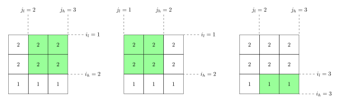
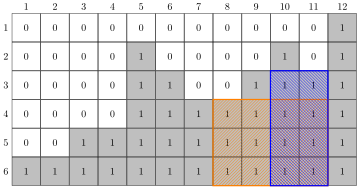
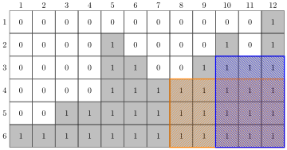
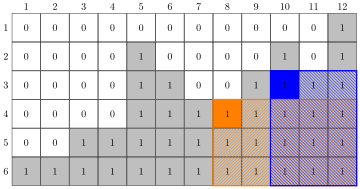
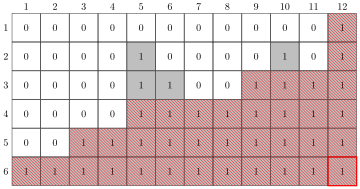
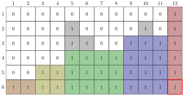
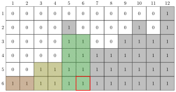

Índice
1. Clase 2 - Algunos problemas de stack
La pila es una estructura secuencial que solo nos permite acceso y modificación de un solo extremo: La cima de la pila.
Es útil en situaciones en las que solo nos importan elementos recientemente añadidos y cuando adicionalmente podemos fácilmente descartar un elemento como irrelevante para el cómputo futuro.
Se vieron dos problemas clásicos de la aplicación de esta estructura:
- Encontrar el siguiente elemento más grande para todos los elementos de un arreglo en tiempo \(O(N)\).
- Contar el número de submatrices con elementos iguales de una matriz dada en tiempo \(O(N \times M)\).
1.1. El problema del siguiente más grande
Se tiene un arreglo \(A\) de tamaño \(N\). Se quiere obtener otro arreglo \(G\) de tamaño \(N\) de tal manera que \(G_i\) sea para el elemento \(A_i\) el valor del siguiente elemento a su derecha que es mayor a él. Es decir, \(G_i\) es el primer \(A_j\) que cumple simultáneamente que \(j > i\) y \(A_j > A_i\). En caso de que no exista tal elemento para un \(A_i\) dado entonces se define \(G_i = \infty\).
Por ejemplo, para \(A = [2, 5, 4, 3, 10, 5, 12]\), se tiene que calcular \(G = [5, 10, 10, 10, 12, 12, \infty]\).
Hay varias pistas que el problema nos da sobre su solución, en particular, podemos hacer las siguientes observaciones:
[observación] Redundancia (cómputo repetido). El problema de computar \(G_i\) está íntimamente relacionado con el problema de computar \(G_{i + 1}\). En particular, el problema de computar \(G_i\) es practicamente el mismo problema que computar \(G_{i + 1}\) pero con un nuevo elemento extra (que es \(A_i\)) y con un punto de inicio diferente (se empieza desde \(A_i\) en lugar de \(A_{i + 1}\)). Esto nos sugiere procesar desde el problema más pequeño (\(G_N\)) hasta el problema más grande (\(G_1\)) o de derecha a izquierda.
[observación] Efecto de anulación de elementos. Es también posible observar que existe un cierto efecto de anulación entre elementos. Si, por ejemplo, en cualquier parte del arreglo \(A\) tenemos \([... 5, 2, 3, ...]\) sabemos que el elemento \(5\) anula (u opaca, o hace irrelevantes) a los elementos \(2\) y \(3\). El elemento \(5\) hace imposible que el \(2\) o el \(3\) sea el siguente valor más grande para cualquier elemento que esté a la izquierda del \(5\), ya que cualquier elemento a su izquierda primero va a encontrar al \(5\) antes que al \(2\) o al \(3\).
[propuesta] Estas dos pistas juntas nos apuntan a una posible aplicación de una pila: Vamos a procesar el arreglo y computar \(G_i\) de derecha a izquierda manteniendo una pila que mantenga los elementos no anulados por ningún otro elemento. La solución para un \(i\) particular es el elemento más reciente que no ha sido anulado por ningún otro elemento (que será precisamente la cima de la pila).
Inicialmente, entonces, nuestra pila estará vacía.
Al procesar el primer elemento (que es \(A_N\) en el proceso de derecha a izquierda) nuestro programa inmediatemente sabe que la solución para este elemento es \(G_N = \infty\) porque no existe ningún elemento a su derecha que sea mayor (lo sabemos porque la pila está vacía). Terminamos insertando \(A_N\) a la pila, ya que es el elemento más reciente que no ha sido anulado.
Al procesar el segundo elemento (que es \(A_{N - 1}\)), primero tenemos que determinar si este elemento anula/opaca a algún elemento de la pila (que en este momento solo tiene al elemento \(A_N\)). Para lograr esto, tenemos que saber si \(A_{N - 1}\) anula a \(A_N\), esto es fácil de determinar comparando las dos cantidades, si \(A_{N} \leq A_{N - 1}\) entonces \(A_N\) es opacado por \(A_{N - 1}\) y debe ser removido de la pila, en caso contrario (cuando \(A_N > A_{N - 1}\)) entonces \(A_N\) sigue siendo un elemento no anulado y sigue siendo la cima de la pila.
Cuando se hace esto, se encontrarán dos posibles escenarios:
- Si la pila está vacía (porque \(A_{N - 1}\) anuló a \(A_N\)) entonces \(G_{N - 1} = \infty\) (ya que \(A_{N - 1}\) no tiene ningún elemento siguiente que es mayor a él).
- La pila se quedó con el elemento \(A_{N - 1}\) ya que éste era mayor a \(A_N\). En este caso sabemos que \(G_{N - 1} = A_N\).
Después de esto, sin importar lo que ha sucedido hasta el momento, insertamos a \(A_{N - 1}\) a la cima de la pila ya que es el elemento más reciente que no ha sido anulado.
Continuar procesando el arreglo es exactamente lo mismo.
Al procesar el \(i\)-ésimo elemento (que es \(A_i\)), primero tenemos que determinar si este elemento anula/opaca a algunos elementos anteriores de la pila. Para lograr esto, iterativamente removemos la cima de la pila mientras ésta sea menor o igual a \(A_i\) (ya que esto implica que \(A_i\) los anula/opaca). Esto nos dejará en dos posibles situaciones:
- Es posible que removamos todos los valores de la pila porque ninguno era mayor a \(A_i\) en cuyo caso sabemos que la solución es \(G_i = \infty\)
- La pila se quedó con elementos restantes y su cima actual es un valor mayor a \(A_i\). En este caso, si denotamos con \(K\) al valor en la cima de la pila, tenemos que \(G_{N - 1} = K\) ya que sabemos que \(K\) es el elemento más reciente que no ha sido anulado por ningún otro elemento (incluyendo a \(A_i\)) y por lo tanto es el siguiente mayor a \(A_i\).
Al final de procesar \(A_i\) siempre lo insertamos a la cima de la pila ya que es el elemento más reciente que no ha sido anulado.
Esto ya resuelve el problema.
1.2. El problema del número de submatrices con elementos iguales
Se tiene una matriz de tamaño \(N \times M\) llamada \(A\). Se pide computar el número de submatrices de la matriz \(A\) cuyos elementos son todos iguales. Dos submatrices se consideran diferentes si son porciones diferentes de la matriz original, aún si sus tamaños y sus elementos son iguales.
Formalmente, las submatrices en esta clase de problemas suele definirse por la posición de su esquina superior izquierda \((i_l, j_l)\) y la posición de su esquina inferior derecha \((i_h, j_h)\) o equivalentemente la tupla compuesta por la unión de estos datos \((i_l, j_l, i_h, j_h)\) que se puede llamar su tupla de límites (pues son los límites en los índices que definen a la submatriz).
Como aclaración, a continuación se muestran tres submatrices que se cuentan como submatrices diferentes para el problema (a pesar de que dos de estas submatrices tienen el mismo tamaño y contienen los mismos elementos).

Figura 1: Un ejemplo de tres submatrices diferentes.
Nota: A lo largo de lo que sigue cada vez que se menciona matriz igual o submatriz igual nos referimos a matrices/submatrices cuyos elementos son todos iguales. No nos referimos a que sea igual a otra matriz/submatriz.
Este es un problema significativamente más difícil que el anteriormente expuesto, pero sigue sin embargo siendo atacable por un acercamiento similar.
1.2.1. Discusión introductoria
En primer lugar, el problema en su forma original se mueve mucho. Si imaginamos todas las posibles submatrices que se pueden formar para una matriz dada las posibilidades son muchas y muy diversas. Sin mucho órden entre sí, el problema se siente inquebrantable.
Este problema, como muchos otros, es susceptible a una transformación que surge al fijar puntos del problema. En lugar de pensar en el problema original, crearemos muchos pequeños problemas que después unimos para obtener la solución al problema original. En particular, vamos a dejar fija una parte de las submatrices que estamos buscando.
Una submatriz tiene 4 parámetros que la definen (la tupla que se mencionó anteriormente) y cada uno se puede fijar para crear un problema distinto. Existen muchas posibles combinaciones, cada una tiene su propio mérito y debe ser explorada de acuerdo a la intuición particular de cada persona.
Por exploración, una de las mejores cosas por fijar en este problema es fijar la esquina inferior derecha de la submatriz.
Es decir, en lugar de buscar computar «el número de submatrices iguales de la matriz \(A\)» ahora buscamos computar «el número de submatrices iguales de la matriz \(A\), que tienen como esquina inferior derecha a \((i, j)\)». Llamemos al número de submatrices con elementos iguales que terminan en la celda \((i, j)\) como \(N_{i, j}\). Buscamos ahora cómo computar estos valores, que simplemente sumamos para obtener la respuesta original boscada.
A primera impresión puede parecer un avance modesto y quizá hasta insignificante, pero se logra algo importante: Se ha descompuesto el problema original que era computar un solo número (el número de submatrices iguales) y ahora tenemos \(N \times M\) subproblemas diferentes y relacionados entre sí (uno por cada posible esquina inferior derecha de la matriz).
Pero ¡la situación solo ha empeorado! (se puede objetar) antes teníamos un problema ¡ahora tenemos \(N \times M\) problemas! Y es verdad, el número de problemas solo se ha multiplicado.
Sin embargo, muchos de varios estos subproblemas ahora son triviales: Por ejemplo, es extremadamente evidente que la cantidad de submatrices iguales que tienen como esquina inferior derecha a la celda \((1, 1)\) es \(1\) (la submatriz compuesta por solo esta celda).
Y, como se verá a continuación, si no son triviales, varios de estos problemas ahora están relacionados y presentan mucho grado de redundancia (cómputo repetido) entre sí, así como en el problema anterior.
1.2.2. Solución
Sea \(N_{i, j}\) la cantidad de submatrices iguales cuya esquina inferior derecha es la celda \(A_{i, j}\). Si denotamos con \(N_{\text{total}}\) a la solución del problema original, entonces \(N_{\text{total}} = \sum N_{i, j}\). Donde la suma es sobre todas las posibles esquinas inferiores derechas \((i, j)\) (que son todas las \(N \times M\) posibles celdas en la matriz).
[observación] Redundancia. Sea \((i, j)\) una posición en la matriz \(A\) con valor \(A_{i, j}\). Si el elemento en la posición \((i, j + 1)\) existe y tiene el mismo valor \(A_{i, j + 1} = A_{i, j}\) entonces los problemas \(N_{i, j}\) y \(N_{i, j + 1}\) son parecidos entre sí. En particular, muchas submatrices que terminan en \((i, j)\) se pueden extender a submatrices que terminan en \((i, j + 1)\). Se muestran ejemplos de esto en los siguientes diagramas.

Figura 2: Dos submatrices iguales que terminan en \((6, 11)\).

Figura 3: Dos submatrices iguales que terminan en \((6, 12)\) y que son extensiones de las anteriores submatrices.
Lo que nos sugiere esto es que primero debemos procesar \((i, j)\) y luego procesar a \((i, j + 1)\) de izquierda a derecha. Adicionalmente, nos sugiere también que deberíamos procesar renglón por renglón, ya que cada instancia del problema en un renglón se parece a las demás instancias del problema en el mismo renglón.
[observación] Correspondencia entre submatrices y celdas. Si estamos computando \(N_{i, j}\), queremos contar el número de submatrices con esquina inferior derecha \((i, j)\). Podemos identificar cada una de estas submatrices posibles con su esquina superior izquierda. Es decir, cada submatriz que contemos va a corresponder con una celda. Podemos entonces dejar de pensar en submatrices y pensar que estamos contando el número de celdas que pueden servir como esquinas superiores derechas permisibles.
Usando el ejemplo anterior para dos submatrices que terminan en \((6, 12)\). Se resaltan las dos celdas asociadas a cada submatriz.

Figura 4: Correspondencia entre dos submatrices con esquina inferior derecha \((6, 12)\) con celdas identificadoras.
Hablando más sobre las submatrices que terminan en \((6, 12)\). Podemos con la correspondencia mencionada anteriormente dibujar gráficamente todas las posibles esquinas superiores izquierdas permisibles. Lo que se muestra en la siguiente figura.

Figura 5: Ilustración de todas las posibles esquinas superiores izquierdas para la esquina inferior derecha \((6, 12)\). Todas las celdas resaltadas en rojo son permisibles, todas las que solo están en gris son celdas iguales pero no permisibles (ya que generarían una submatriz con diferentes valores).
La solución para \(N_{6, 12}\) corresponde entonces con el área mostrada en rojo.
Podemos con este diagrama hacer algunas observaciones generales.
[Observación] El área de celdas permisibles se puede descomponer en rectángulos.
[Observación] Los rectángulos que componen a una solución tienen alturas incrementales.

Figura 6: Descomposición de una solución en rectángulos.
Con todo lo anterior, podemos ver que si de alguna forma pudiéramos mantener la lista de rectángulos vistos hasta el momento junto con el área que cubren dichos rectángulos entonces podríamos ir actualizando la solución mientras recorremos las columnas \(j\) de izquierda a derecha.
Para lograr esto necesitamos hacer otra observación.
[Observación] Cada vez que se agrega una nueva porción al área cuando se transiciona de \((i, j)\) a \((i, j + 1)\) la altura recién agregada consume a los rectángulos previos con alturas mayores o iguales.
Esto se puede observar si se comparan las áreas del problema \(N_{6, 6}\) y la del problema \(N_{6, 7}\).

Figura 7: Solución para esquina inferior derecha \((6, 6)\).

Figura 8: Solución para esquina inferior derecha \((6, 7)\), la nueva área verde tuvo que consumir a la anterior área verde, reduciendo su altura y sumando su ancho.
[Propuesta] Con todo lo anterior se puede vislumbrar la siguiente solución al problema.
- Se va a contar \(N_{i, j}\) por cada posible \((i, j)\).
- El recorrido se realizará renglón por renglón (el orden en que se realice es irrelevante ya que son problemas independientes).
- Dentro de cada renglón, el recorrido se realizará de izquierda a derecha (este orden es importante).
- Se mantendrá un stack de rectángulos con elementos iguales con alturas incrementales. La cima de la pila será el último rectángulo visto.
- Cada vez que se avance de \(j\) a \(j + 1\) se tiene que agregar la nueva área de ancho 1 con altura \(H_{i, j}\) (donde \(H_{i, j}\) es la altura de elementos iguales a partir de la posición \((i, j)\) hacia arriba).
- Cada que se agregue un área se tiene que iterar sobre el rectángulo más reciente visto (la cima de la pila), si éste tiene una altura mayor o igual a la nueva área entonces debe ser removido y su ancho sumado al ancho de la nueva área agregada. Este proceso se repite mientras la cima de la pila tenga un rectángulo más alto o igual que el área agregada.
- Cada rectángulo, adicionalmente a su ancho y su altura, tiene que recordar el área total que le precede, esto se puede actualizar entre cada adición de área.
- Una vez que se ha agregado el área nueva, se puede sumar su respuesta a la solución total.
- Cada vez que se pase de \((i, j)\) a \((i, j + 1)\) y \(A_{i, j} \neq A_{i, j + 1}\) se tiene que vacíar la pila, ya que todos los rectángulos vistos anteriormente ahora serán inválidos.
- Cada vez que se pase de un renglón a otro se tiene que vacíar la pila por razones idénticas.